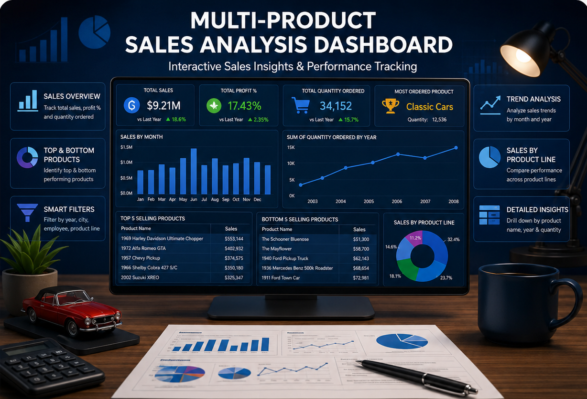
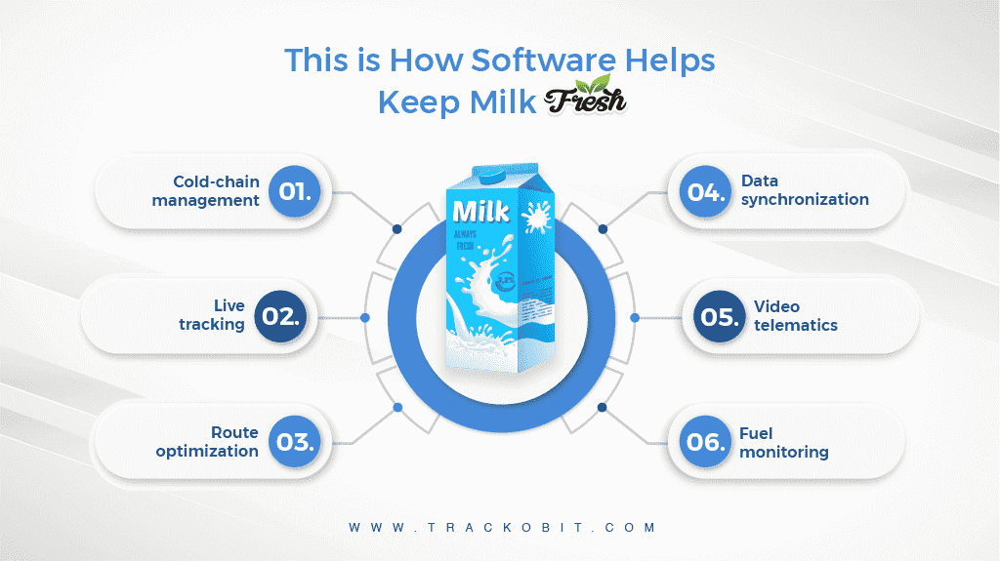
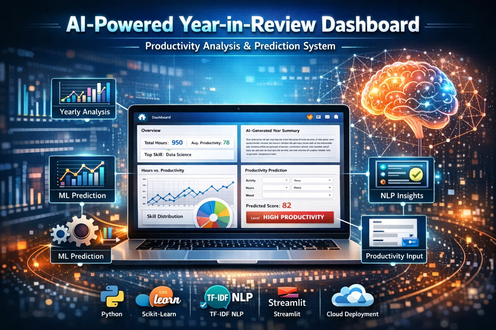

All Projects

Multi-Product Sales Analysis Dashboard
Brief of Project: A Power BI dashboard that visualizes sales data of various product categories including classic cars, motorcycles, planes, and more.
Problem Statement: The aim is to extract insights from raw product sales data, helping in decision-making by visualizing trends and comparisons across products, regions, and time.

Dairy Supply Chain Dashboard
Brief of Project: An interactive Power BI dashboard analyzing dairy production, inventory, sales, and profitability across farms, regions, and products to optimize the supply chain.
Problem Statement: Developed to provide actionable insights for dairy farm operations, improving production efficiency, inventory management, and sales performance tracking.

AI-Powered Year-in-Review Productivity Dashboard
Brief of Project:An AI-driven analytics dashboard that analyzes year-long productivity data to extract insights, identify trends, and generate productivity scores.
Problem Statement: Individuals often lack structured insights into their long-term productivity patterns. This project aims to convert raw productivity and reflection data into meaningful insights using data analytics, NLP, and machine learning.
Portfolio Website
Brief of Project: A responsive personal portfolio website to showcase projects, skills, certifications, and resume with professional design and structure.
Problem Statement: Needed a single digital platform to professionally present all technical achievements and capabilities in one accessible and engaging layout.
Titanic Survival Prediciton
Brief of Project: A machine learning project predicting Titanic passenger survival using classification models in Google Collab.
Problem Statement: Built a predictive model to determine passenger survival based on demographic and socio-economic features from Titanic dataset.
Movie Rating Prediction
Brief of Project: Built a machine learning model to predict movie ratings based on genre, cast, director, and other metadata.
Problem Statement: Predicting the IMDb-style rating of a movie before release to help stakeholders make informed marketing and budgeting decisions.
Iris Flower Classification
Brief of Project: Developed a classification model to identify iris flower species based on petal and sepal dimensions.
Problem Statement: To accurately classify the type of iris flower (Setosa, Versicolor, or Virginica) using machine learning on the classic Iris dataset.

Credit Card Fraud Detection
Brief of Project: Built a machine learning model to detect fraudulent transactions from anonymized credit card data.
Problem Statement:This project aims to detect Credit card Frauds using historical transaction data and anomaly detection methods.